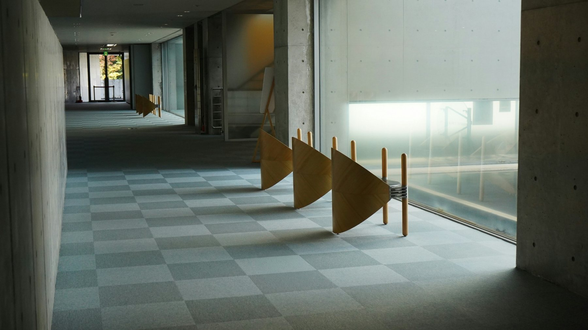

Metodologia
Sete passos
Pensar antes de responder.
Nossa metodologia combina escuta, pesquisa, arquitetura argumentativa, contraste crítico e revisão para transformar problemas complexos em decisões juridicamente sustentáveis.

Um bom parecer não começa pela resposta. Começa pela pergunta correta.
01 Escutar e delimitar
Todo trabalho começa pela compreensão do caso. O objetivo inicial é separar problema, sintoma, contexto, objetivo e restrições. Antes de buscar a solução, definimos o que exatamente precisa ser respondido.
02 Organizar o problema
Fatos não chegam organizados. Documentos não contam sozinhos a história. Reconstituímos a situação, identificamos relações relevantes e desenhamos as variáveis que podem alterar a análise.
03 Pesquisar e testar
A investigação reúne legislação, jurisprudência, doutrina, documentos e, quando pertinente, dados econômicos ou empíricos. A pesquisa não serve apenas para confirmar uma hipótese: também deve procurar razões para refutá-la.
04 Construir a tese
A tese é estruturada a partir de premissas identificáveis, distinções relevantes e argumentos que possam ser submetidos à crítica. Quando um argumento depende de uma evidência, ela deve aparecer. Quando depende de uma interpretação, ela deve ser explicitada.
05 Contrastar
Uma posição sólida precisa sobreviver à melhor objeção disponível. Por isso, examinamos argumentos contrários, precedentes em sentido diverso, limites da tese e pontos de incerteza.
06 Escrever e revisar
A redação transforma a análise em instrumento de decisão. Revisamos lógica, linguagem, referências, coerência, precisão e ritmo. A forma final deve ser proporcional ao problema e ao uso que será feito do trabalho.
07 Entregar clareza
A conclusão deve responder ao problema e deixar visíveis as consequências. Não prometemos certezas onde existem riscos. O trabalho consultivo serve também para mostrar o que ainda é incerto.